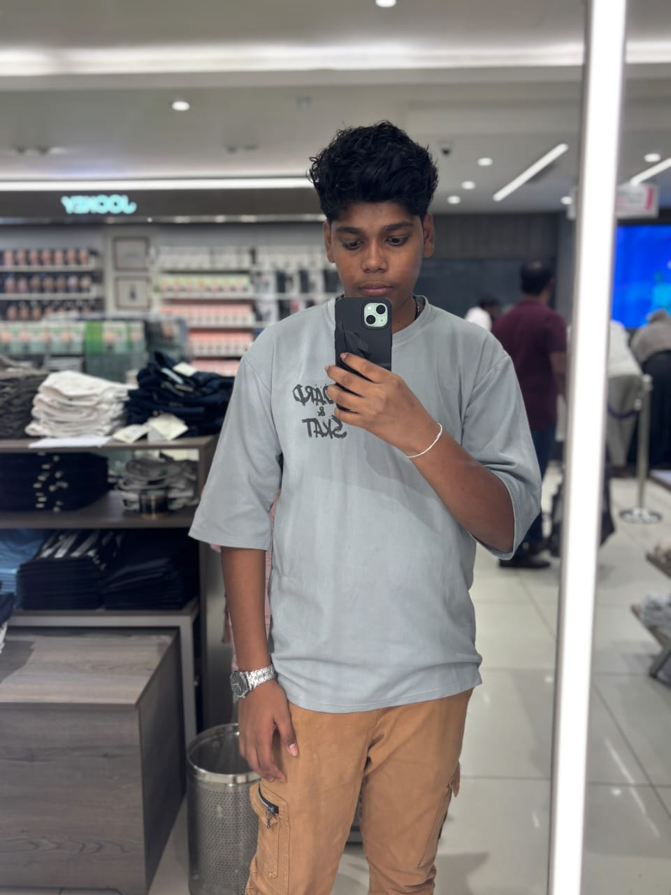

Mahendra Singh Dhoni, born on July 7, 1981, in Ranchi, is one of the most successful captains in Indian cricket history. He made his international debut in 2004 and quickly became known for his powerful batting and excellent wicketkeeping skills. Dhoni is popularly called “Captain Cool” for his calm and composed nature on the field. Under his leadership, India won the 2007 ICC T20 World Cup, the 2011 Cricket World Cup, and the 2013 Champions Trophy. He is famous for his unique helicopter shot and strong finishing ability. Dhoni retired from international cricket in 2020 but remains an inspiration to millions of fans.
The event is organised by the one of our friend Ajay Jayesh who is the head of this organisation and the sponser is also he and he is planed to go a trip for ladakh lets dream be posible
You can bring your pets along with you and the food for your lovable pets will be provided by us
He will buy this thar roxx car by soon as posible